The motorcycles and cars I've owned, wrenched on, and modified over the years, oldest to newest.
Kymco Super 8 (50cc Scooter)
My first motorcycle, and the bike that got me into wrenching on them in the first place. It's a 50cc scooter that was restricted to about 25 mph out of the box. Here's what I did to open it up:
- Unrestricted CDI
- 100cc big bore kit
- Larger carburetor from the 150cc GY6 engine
- Polini variator
- Ebay exhaust
Got it up to 45 mph on the flat, but it still wasn't fast enough...
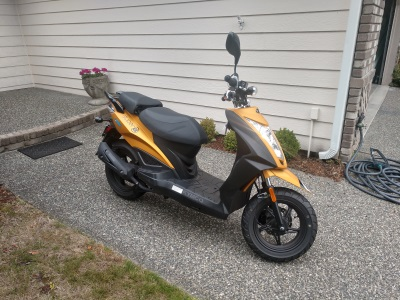
Kymco Spade 150cc
A step up from the Super 8, this was a 150cc mini-bike. It didn't have much aftermarket support, so I didn't do much to it beyond some cosmetic upgrades. Topped out at about 55 mph. Mostly rode it around side streets and used it to get comfortable on the road/on a bike.
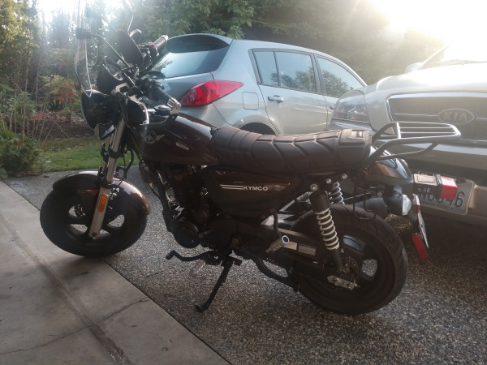
BMW G310GS
My third bike, and my first real capable one. Did a bunch of offroading on it: forest roads, a couple sections of the WA BDR, single track out at Reiter and Walker ORV, and quite a bit of riding around town too.
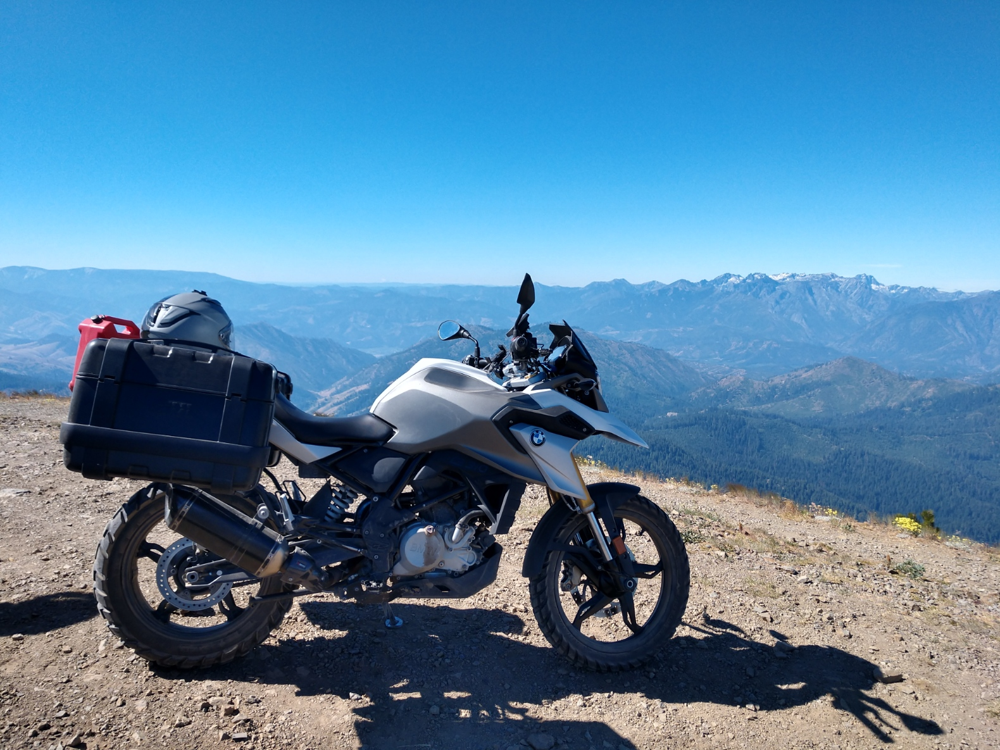
Yamaha R3
The R3 was one of the most modifiable bikes I ever had, and I did loads of work on it. I bought it with 800 miles on it and sold it with 5,600. Here's a list of everything I did if I can remember:
- Akrapovic carbon fiber full exhaust
- Ohlins front and rear suspension
- TST worx package (Velocity stacks, AIS block offs, air box mods, K&N filter + Dyno Tune from 2 Wheel Dyno), put out 42HP peak
- Brembo front caliper
- CRG levers
- R6 throttle tube
- Vortex clip-ons
- Spiegler steel brake lines
- TST integrated tail light and flush mount turn signals
- TST carbon fiber front fender
- Driven sprocket and chain kit
- Arashi Rear Sets
- Driven Halo gas cap
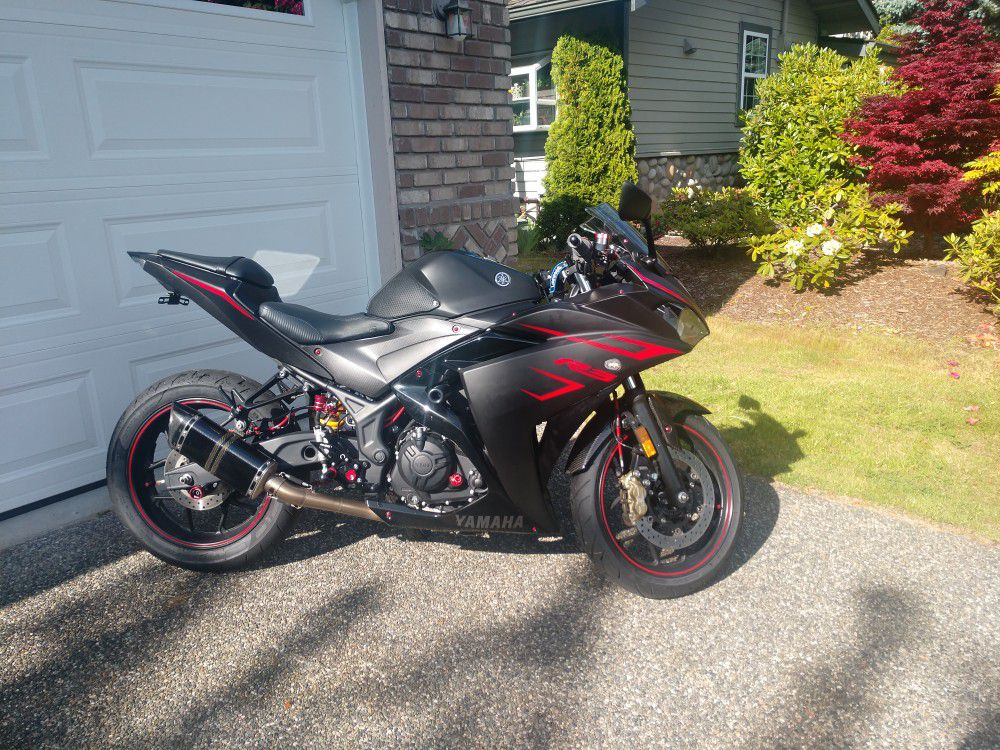
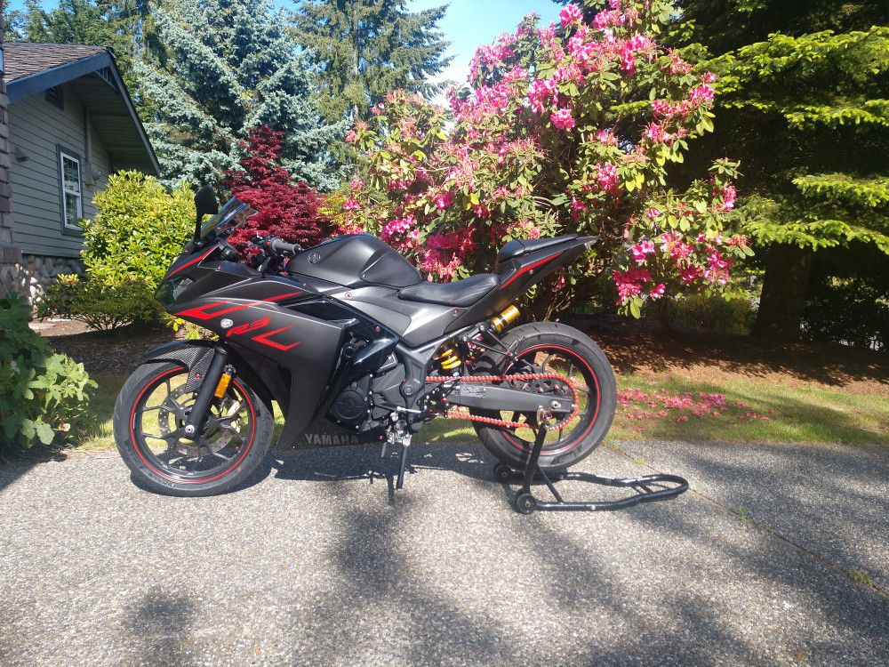
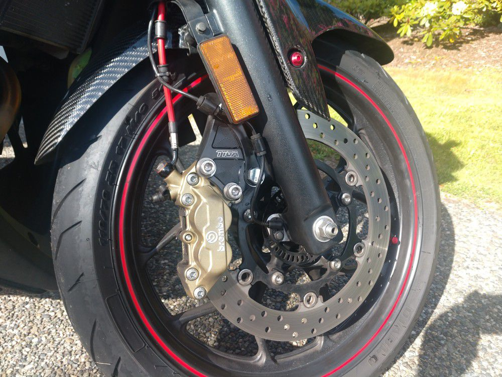
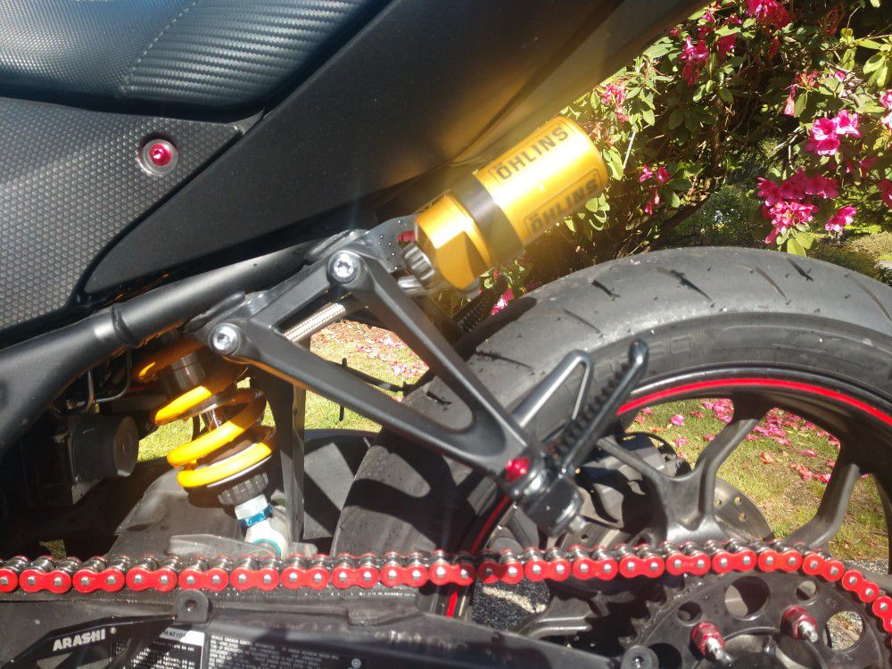
SV650s
The guy who sold me the R3 Ohlins suspension parts also had a completely destroyed SV650s that he sold me for cheap, first photo is how he dropped it off at my house, the second photo is when I sold it. Again, tons of mods and maintenance work:
- Loads of electrical work to get it to start and lights to work.
- Replaced fuel lines.
- All new fluids and filters
- Brembo front master cyclinder
- Brake pads and steel braided lines
- Valve check, plugs, compression test, and replacement cam shaft retainers.
- Delkevic exhaust
- Vortex quick accel sprocket and chain kit
- Brand new fairing set, lower fairings with custom brackets.
- Decals :)
This was also the first bike I took out for a couple track days.
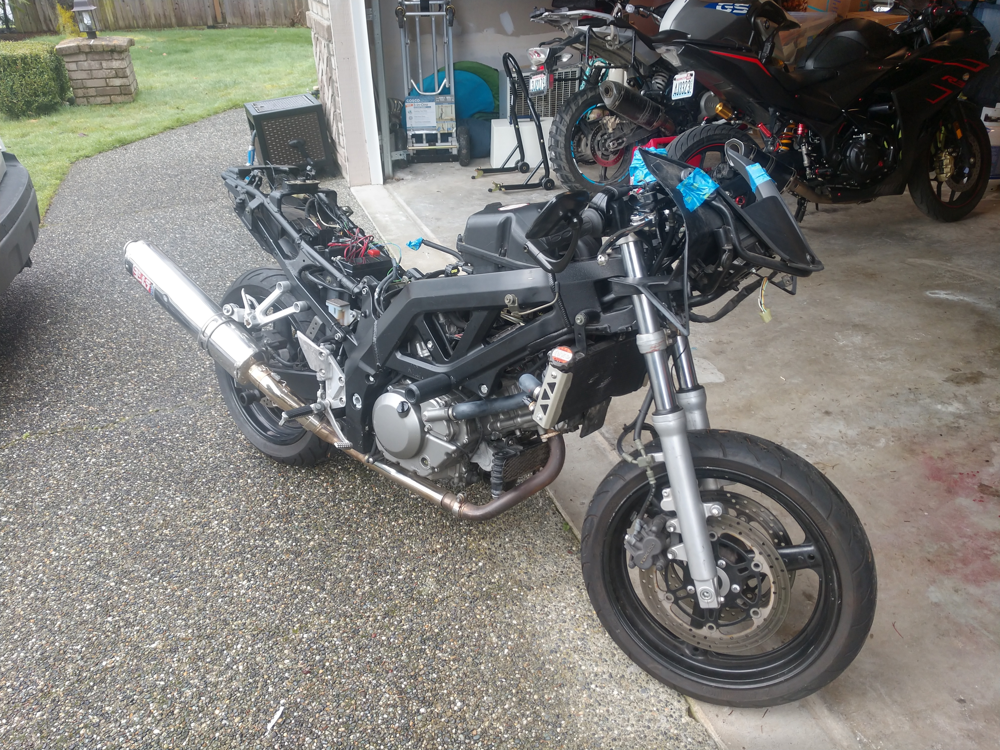
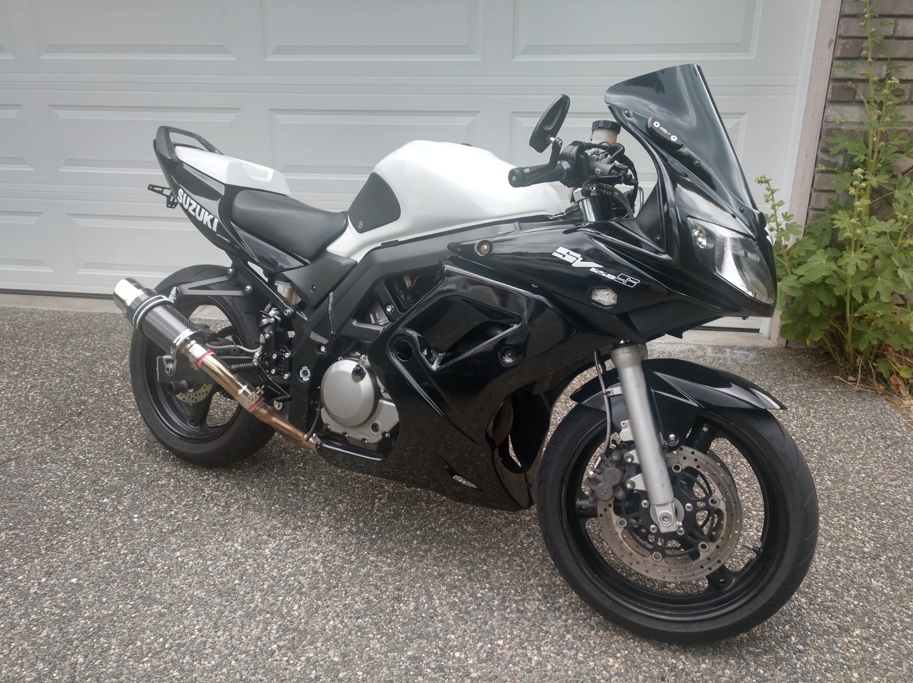
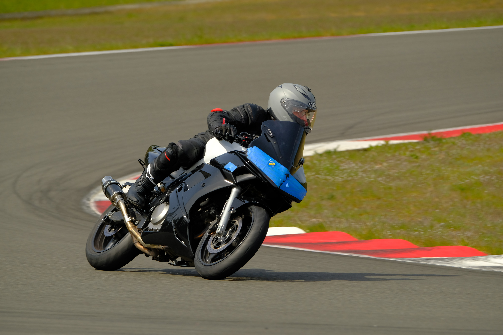
Suzuki GSXR 600
This bike was already really awesome and a lot of fun, so I didn't do much to it: a quick accel sprocket kit, an exhaust servo delete, and an O2 sensor delete.
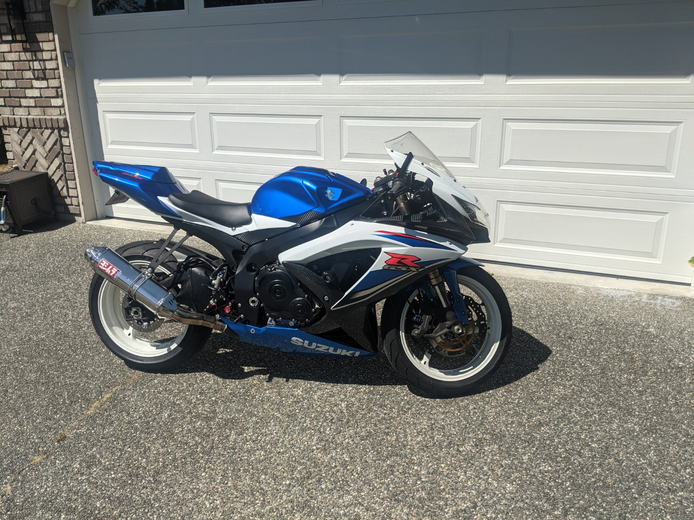
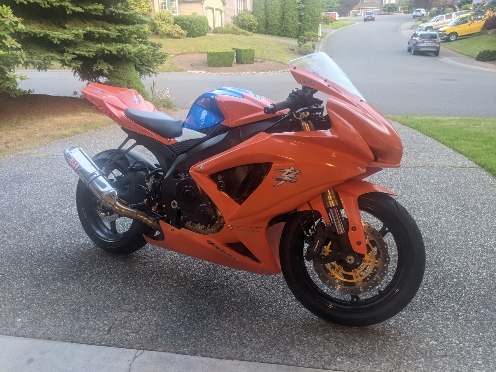
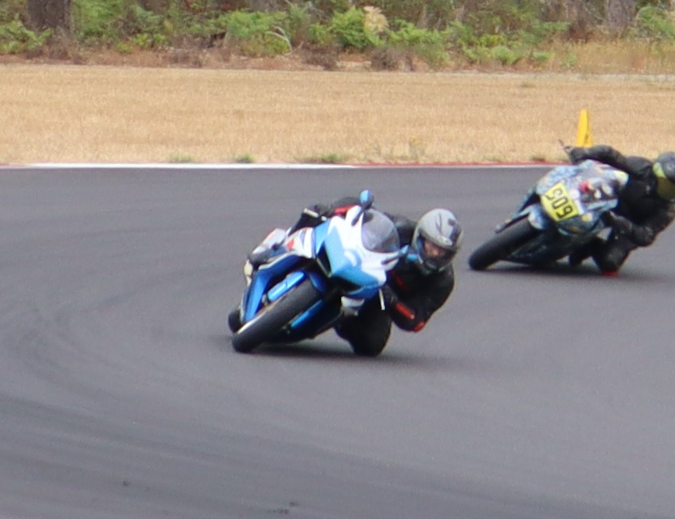
2006 Suzuki DRZ400S
Bought nearly 20 years old with only 800 miles, tons of mods, had it swappable from dirt to street (supermoto). One of the most fun bikes I ever had.
- 434CC Big Bore Kit
- Lectron Carburetor
- Full Yoshimura Exhaust
- Larger gas tank
- Hotcams stage 2 intake and exhaust cams
- Steel braided brake lines
- Aftermarket rotors
- Lots of gold bling

2020 Mustang Ecoboost
I bought the mustang primarily because it was cheap, but also because it's one of the most customizable and modifiable platforms out there. It was also my first time seriously working on a car. Here are all the things I've done to it so far:
- K&N cold air intake
- Turbosmart dual-port blow off valve
- Turbosmart 7 PSI wastegate
- CVF race intercooler and CVF charge pipe kit (hot and cold side)
- R1 concepts brake kit, rotors and pads
- CVF 3" downpipe
- SPEC-D 3" cat back exhaust
- PPE aluminum transmission pan
- Ruthenium spark plugs
- Eibach 1" pro lowering springs
- Mishimoto catch can
- Performance, 91 octane tune
- General maintenance, regular oil changes, transmission fluid/filter change, rear diff oil replacement.